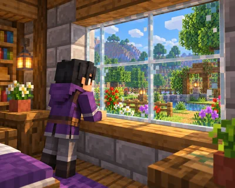

方块与材料 难度 · 进阶 约 54 词
A Window to the World
窗户为什么用玻璃？

这篇讲什么
墙将屋内外隔开，窗户却让你能望向外面。
核心词:Glass —— 在画面里找到它,再把单词念出来。
A wall keeps the outside world out, but a window lets you look through it.
游戏里会用到的一句,读两遍再抄一次。
方块与材料 难度 · 进阶 约 54 词
窗户为什么用玻璃？

墙将屋内外隔开，窗户却让你能望向外面。
核心词:Glass —— 在画面里找到它,再把单词念出来。
A wall keeps the outside world out, but a window lets you look through it.
游戏里会用到的一句,读两遍再抄一次。